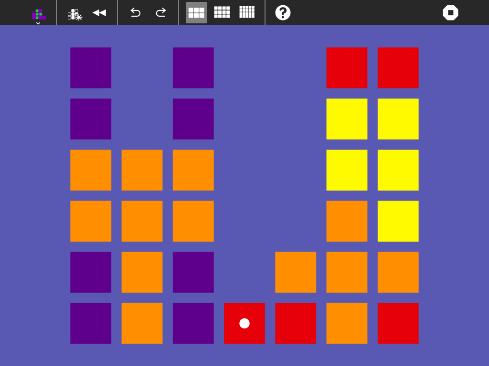

Implode¶
About¶
Implode blocks of the same colour until they are all gone.
Implode is a logic game based on the “falling block” model of Tetris. The game starts with a grid partially filled with blocks. Make a move by removing adjacent blocks of the same color in groups of three or more. When blocks are removed, higher blocks fall to fill their space, and when a column is cleared, the blocks on either side close to fill the gap. The object of the game is to remove all the blocks. Since the patterns of blocks above changes when lower blocks are removed, you must carefully decide what order in which to remove the blocks so that there are no isolated blocks left at the end of the game.
(The levels are generated in such a way that there is always a sequence of removals that clears the board.)

Where to get Implode¶
Implode activity is available for download from the Sugar Activity Library: Implode
The source code is available on GitHub.
How to play¶
the game starts up with a field of blocks.
using the mouse pointer, or touchscreen, click on a block that is in a group of three or more of the same color (clickable groups highlight as you pass the mouse cursor over them). Clicking on a group removes it and compacts the playing field.
continue clicking groups of blocks until the board is cleared.
Stuck?¶
If you get stuck with leftover blocks, you can:
Click the Undo icon in the toolbar to undo some moves so that you can try again.
Click the Restart icon in the toolbar to try the puzzle again from the beginning.
Click the New icon in the tool bar to try a different puzzle.
Keyboard Shortcuts¶
Arrow keys to select blocks to implode.
Enter key to implode selected blocks, or start a new game once the level is cleared.
On an XO laptop, the game can also be played via the game keys and directional pad:
Use the directional pad to move the selection cursor.
Use the checkmark game key to remove a selected group of blocks.
Use the circle game key to undo a move.
Use the X game key to redo a move.
Use the square game key to start a new game (only when the level is cleared).
Where to report problems¶
Please report bugs and make feature requests at implode-activity/issues.